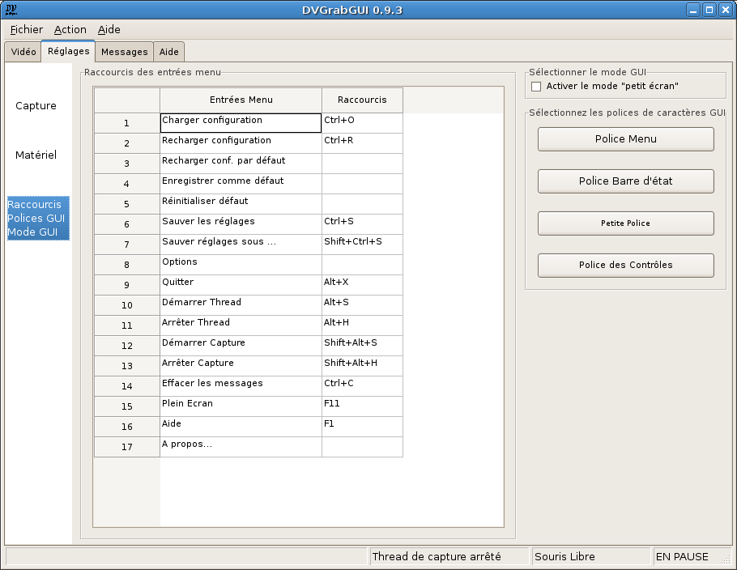

Pré: Référence → Réglages → Matériel --- ↑Home
DVGrabGUI 0.9.4
Référence → Réglages → GUI
Cet onglet vous permet de régler les options concernant l'interface graphique.

-
Raccourcis des entrées menu:
Vous pouvez ici ajouter/modifier des raccourcis clavier pour les
entrées des menus. Les touches modificatrices
("Shift" – c-à-d "Maj"… –, "Ctrl" et "Alt") peuvent être
indiquées avec leur nom complet, ou deux caractères: "s_" pour "shift",
"c_" pour "ctrl", et "a_" pour "alt". Le "vrai" raccourci peut être
une lettre, une touche de fonction ("F1" à "F12"), ou la touche "enter"
("entrée"). Vous pouvez les séparer avec une espace, ou un signe "-" ou
"+".
Voici quelques exemples: "c_ alt+S" pour "Ctrl+Alt+S";
"Alt-s_ f05" pour "Shift+Alt+F5"; …
-
Sélectionner le mode GUI:
Activer le mode "petit écran"
Activez cette option pour passer l'interface en mode "petit écran",
optimisé pour les écrans tactiles 800×600.
-
Sélectionner les polices de caractères GUI:
Ces quatre boutons vous permettent de modifier les polices utilisées
par l'interface:
-
Police Menu
Devrait modifier la police des menus, mais cela ne semble pas
fonctionner avec wxGTK!
-
Police Barre d'état
Pour modifier la police de la barre d'état…
-
Petite Police
Pour modifier la "petite police" utilisée par certains textes
statiques d'information.
-
Police des Contrôles
Pour modifier la police utilisée par tous les contrôles (textes
statiques, boutons, …).
Pré: Référence → Réglages → Matériel --- ↑Home
(c) 2006, 2007, 2008 Bastien Montagne (montagne29 chez wanadoo point fr).
Projet hébergé sur sourceforge.net/projects/dvgrabgui.